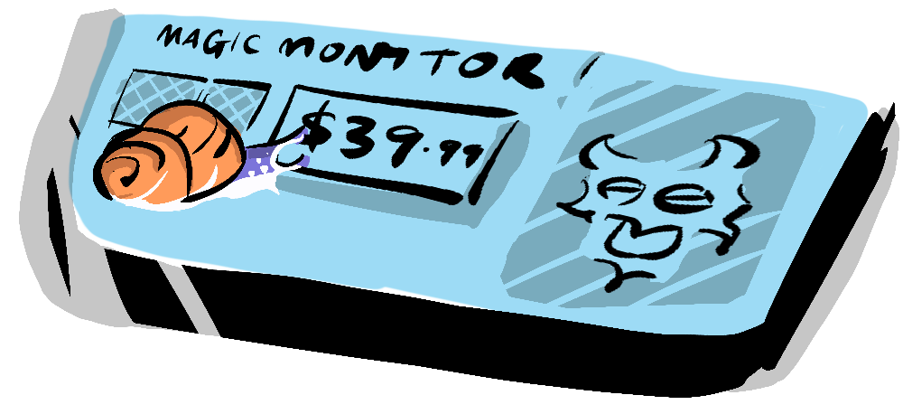
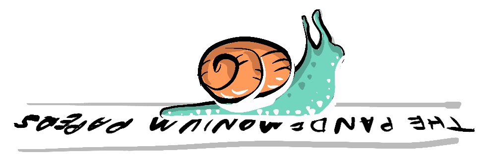

~ 4 ways moloch is ruining your life! ~
Molochian systems - they're insidious, they're ubiquitous, and they're messing with your life in ways you might not even realize. They come in many different flavors - some playing on human irrationality, exploiting externalities, or initiating races to the bottom, and some are more complex pernicious systems. Today, we're diving into four key examples of these pesky systems that can turn self-interest into a collective nightmare: Listicles, Bargain Hunting, Tax Havens, and Late-Stage Capitalism.. First off, let's talk about something we all have fallen for...
We've all had that feeling, as we slowly slide down to the bottom of a serious article, full of 'word-vegetables', we are struck by the 'junk-food-buffet' and the unanticipated desire to see what "... these 20 celebrities look like now".
Sounds familiar? That's because these engagement-driven algorithms take advantage of our evolutionary proclivities for gossip and negativity, not unlike the legacy media's notorious 'If it bleeds, it leads'. They embody a Molochian System where even the content creators themselves become victims, surrendering their message to the relentless chase for eyeballs.

While we're down at the bottom of the news article, our eye is drawn to the clip-on laptop LCD screen extender at a remarkable 90% off!. This seems too good to believe, so you carefully probe the reviews, which all seem good, until you find one that points to a news article about the company's use of child labor.
Here, there is an externality being exploited, with the cost being shouldered by an 8-year-old in a foreign country. You decide to forgo the screen and instead donate to Unicef.
Some Molochian systems such as Tax Havens are purely race-to-the-bottom scenarios. In the interests of luring big business, smaller economies compete for the lowest tax rates. Ireland, from which Apple runs its European operations, has a 12•5% tax rate, while some island countries such as Bermuda (Google Alphabet, Uber) and the Cayman Islands (Alibaba) reach the actual bottom, offering tax rates of 0%.

This means that the tremendous amounts of wealth being generated by these companies is not being redistributed to the societies that support them, or to the countries where people buy their products.
Tax Havens play into another type of Molochian system, which I'll call Pernicious Systems. These are systems where rational self-interested behavior and human instincts are built-in, and with some maintenance, the system largely self-balances. But if maintenance of the system fails to mitigate for bad actors gaming the system with tax havens or mismanaged mortgage-backed securities, it can fall out of balance, leading to increasing inequality.
As is so often the case with click-bait, the title is not always perfectly accurate and perhaps these issues aren't exactly "ruining your life", however it is clear that the four Molochian systems we've explored - Listicles, Bargain Hunting, Tax Havens, and Late-Stage Capitalism - are operating in our day-to-day lives. They exploit our human tendencies, manipulate external circumstances, and stimulate a ruthless race to the bottom, all resulting in outcomes counter to collective well-being.
But before we despair, it's important to remember that while Moloch is powerful, knowledge is more so and is the first step toward change. So, the next time you're about to click on a listicle or snap up a bargain, make like a snail, slow down for a moment, relax and ask yourself: 'Can I take a less Molochy path?'.
It's important to bear in mind too that unlike click-bait, nuanced discussion requires that we look at all sides. Capitalism, for instance, can be seen in many respects as an example of a non-zero-sum game, while the globalization that leads to exploitative child labor can in other areas have some positive effects for those in the developing world. Listicles can have their place too, even if only as a means to criticize listicles. Tax havens? Well, they're just pure evil.
Thanks for joining this exploration into the systems that shape our lives. Let's keep the conversation going below. What other Molochian systems have you noticed in your life, and how do you think we can tackle them?"